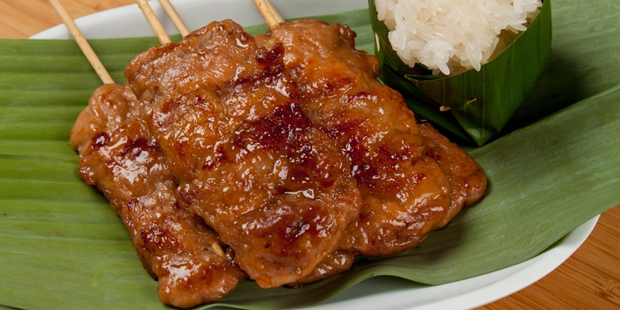

อาหารที่ชอบ
หมูปิ้ง

วัตถุดิบ
สะโพกหมู 500 กรัม
มันหมูแข็ง 100 กรัม
กระเทียม 15 กรัม
พริกไทยขาวเม็ด 1 ช้อนชา
รากผักชี 10 กรัม
แป้งข้าวโพด 1 ช้อนโต๊ะ
เบคกิ้งโซดา 1 ช้อนชา
น้ำปลา 1 ช้อนโต๊ะ
ซอสปรุงรสฝาเขียว 2 ช้อนโต๊ะ
น้ำตาลมะพร้าว 1 ½ ช้อนโต๊ะ
ข้าวเหนียว (สำหรับทานเคียง)
วิธีทำ
หุงข้าวเหนียวสำหรับทานเคียง โดยการนำข้าวเหนียวแช่น้ำร้อนประมาณ 30 นาที ลงไปนึ่งในหวดประมาณ 20 นาทีหรือจนข้าวเหนียวสุก จากนั้นพักไว้มาทำหมูปิ้งกันต่อเล้ย อ่านต่อได้ที่
หั่นสะโพกหมูเป็นชิ้นบางๆ เตรียมไว้ จากนั้นโขลกพริกไทย รากผักชีและกระเทียมให้แหลก นำมาหมักกับสะโพกและมันหมู จากนั้นปรุงรสด้วยน้ำปลา ซอสปรุงรสฝาเขียว น้ำตาลมะพร้าว เบคกิ้งโซดา และแป้งข้าวโพด ขยำทุกอย่างให้เข้ากัน แล้วพักไว้ประมาณ 20 นาที เพื่อให้เครื่องปรุงเข้าเนื้อหมู
นำเนื้อหมูที่หั่นไว้เสียบในไม้ที่ผ่านการแช่น้ำ โดยเสียบส่วนมันก่อน จากนั้นค่อยเสียบเนื้อสะโพก เมื่อเสียบจนเสร็จ นำไปย่างบนเตาถ่านไฟอ่อนๆ จนสุก จากนั้นนำมาเสิร์ฟเคียงข้าวเหนียวที่หุง